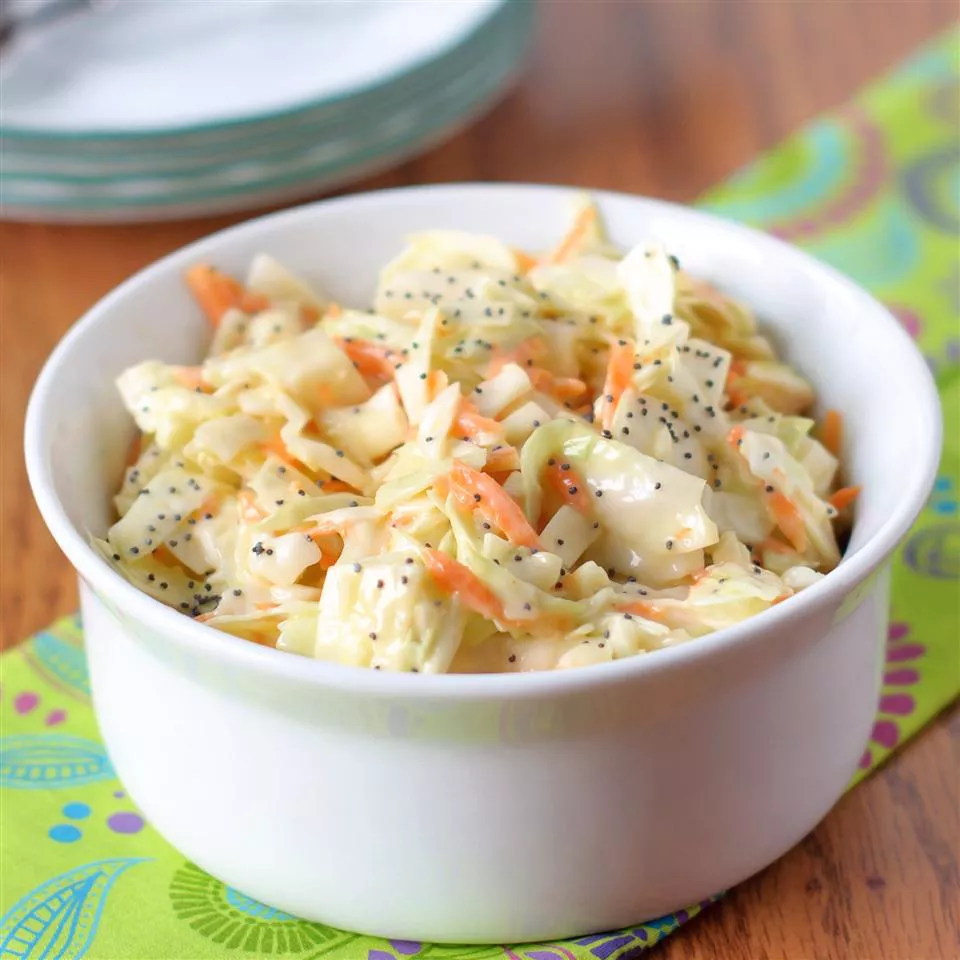

Sweet Restaurant Coleslaw

Indulge in the delectable flavors of our sweet coleslaw recipe,
reminiscent of the slaw served at popular fried chicken or fish restaurants.
This delightful slaw not only pairs perfectly with burgers but also adds a scrumptious touch to BBQ pork sandwiches.
Enjoy a taste that will transport your palate to a culinary delight!
Ingredients
- 1 (16 ounce) bag coleslaw mix
- 2 tablespoons diced onion
- ⅔ cup creamy salad dressing (such as Miracle Whip™)
- ½ cup white sugar
- 3 tablespoons vegetable oil
- 1 tablespoon white vinegar
- ½ teaspoon poppy seeds
- ¼ teaspoon salt
Directions
Step 1:
-
Combine coleslaw mix and onion in a large bowl.
Step 2:
-
Whisk salad dressing, sugar, vegetable oil, vinegar, poppy seeds,
and salt together in a medium bowl until blended.
Pour dressing over coleslaw mixture and toss to coat.
Step 3:
-
Chill for at least 2 hours before serving.
Tips
-
To add a pleasant tanginess, include a splash of freshly squeezed lemon juice
or apple cider vinegar in the dressing.
This will balance the sweetness and provide a refreshing flavor.
-
Allow the coleslaw to chill in the refrigerator for at least 30 minutes before serving.
This time will let the flavors meld together and enhance the taste.
-
Just before serving, add a sprinkle of fresh chopped parsley or cilantro on top for a burst of color and a touch of freshness.
Main Page